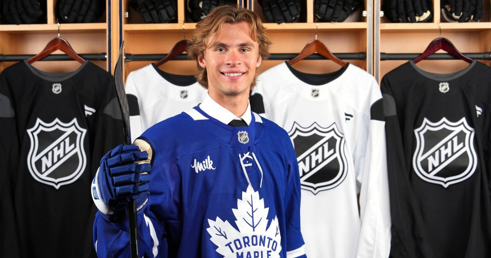

McKenna's First Career Game-Winner Lifts Maple Leafs Past Sharks in Battle of the Top Two Picks
Gavin McKenna scored his first career game-winning goal — a third-period power-play snipe — as Toronto beat San Jose 3-1 in the first meeting between the 2026 draft's top two picks.

Disclosure: this post contains affiliate links. I earn a commission on qualifying purchases.
The first meeting between the top two picks of the 2026 NHL Draft delivered. Gavin McKenna, the No. 1 pick, scored the go-ahead goal at 4:56 of the third period — his first career game-winning goal — lifting the Toronto Maple Leafs to a 3-1 win over Ivar Stenberg and the San Jose Sharks at Scotiabank Arena on Monday.
The goal
On the power play, Auston Matthews recovered a rebound behind the net and fed McKenna, who took it on his backhand, spun toward the slot, and wired it under the glove of Sharks goalie Yaroslav Askarov. 2-1 Leafs. It stood as the winner.
"I want to be a guy who is known for those big moments," McKenna said postgame. "When you get the time and opportunity to be out there on the ice, you want to make the most of it."
It was his first power-play goal in the NHL, his third goal of the season, and the biggest of his 10 points through his first 10 career games.
The top-two-pick showdown
• McKenna (No. 1): game-winning goal, the night's defining moment.
• Stenberg (No. 2): a night to forget — minus-1, one shot on goal in 14:27 of ice time.
Both players downplayed the head-to-head angle. "I don't really go out there thinking it's McKenna versus Stenberg," McKenna said. "It's Leafs versus the Sharks." But round one goes to the first-overall pick, clearly.
Leafs snap the skid
Toronto (4-4-2) snapped a three-game losing streak behind a full-team effort:
• Auston Matthews: goal + two assists
• Nick Paul: also scored
• Sergei Bobrovsky: 30 saves for his first home win as a Leaf
• Power play: 2-for on the night, now clicking at 28.6% (5th in the NHL) with at least one PPG in four of the last five games
San Jose (4-4-1) has now won just once in its last five. The Leafs visit Columbus on Tuesday; the Sharks continue their road trip in Montreal.
Sources: NHL.com · NHL.com game recap · Yardbarker: "Gavin McKenna wants to be known as big moment performer"
Watch
Source: Sharks vs. Maple Leafs | NHL Highlights | Oct 19, 2026 (NHL)
The NHL's official highlights from Toronto's 3-1 win — McKenna's power-play game-winner, Matthews' three-point night, and Bobrovsky's 30 saves.
Gear up: Sports category post → [Fanatics](https://fanatics.93n6tx.net/WOLjqe): via Fanatics